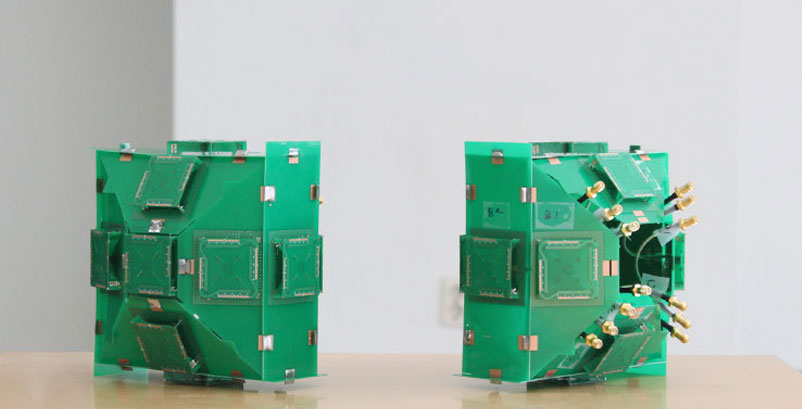
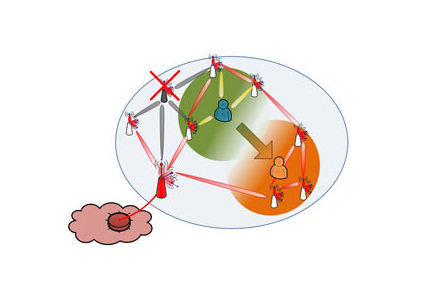

주제별 연구성과
주제별 연구성과
KAIST RESEARCH ACHIEVEMENTS
새로운 이동통신 시스템
5G의 핵심기술
IT융합연구소 조동호
요약
LTE, 4G를 넘어 초고속 이동통신 네트워크 시대를 연다. 한창 이동통신계의 화두로 떠오르고 있는 LTE는 기존 CDMA기반 기술보다 월등한 속도를 낼 수 있어 4세대 이동통신으로 불린다. LTE가 아직 보편화되지 않은 지금 국내에서 5세대 이동통신의 핵심 기술이 연구중이다.
연구내용
이동통신은 음성통화 위주(1, 2세대)에서 영상통화 가능한 수준(3세대)을 거쳐 데이터를 자유롭게 주고받는 정도(4세대)까지 이르렀다. 4세대로의 전환은 스마트폰의 보급에 힘입은 면이 크다. 스마트폰으로 인터넷 접속이 자유로워지고 다양한 서비스가 제공되면서 데이터 수요가 3세대 방식으로는 감당할 수 없을 만큼 폭발적으로 늘어났기 때문이다. 그러나 개인 클라우드와 같은 새로운 형태의 서비스가 지속적으로 등장하고, 고용량의 비디오 등 한꺼번에 많은 데이터를 처리해야 하는 일이 많아지고 있기 때문에 현재의 4세대 이동통신 역시 얼마 안 있어 한계에 부딛힐 것으로 예상된다. 이 때문에 세계 각국에서는 4세대 이후를 준비하면서 5세대 이동통신 시스템 연구를 진행하고 있다.
S 세대를 가능하게 한 주역들
KAIST IT 융합연구소는 5세대 이동통신을 집중적으로 연구하고 있다. 5세대 이동통신망은 4세대 대비 100배나 더 큰 데이터 전송량을 달성하기 위해 기존의 매크로셀 기지국 - 단말로 구성되는 1단계 시스템 대신 소형셀과 다중 빔을 기반으로 하는 매크로셀 기지국 - 분산소형기지국 - 단말로 구성되는 2단계 구조를 도입하는 방안을 연구하고 있다. 분산소형기지국이 중계 역할을 하고 신호를 증폭시켜서 안정적으로 대량의 데이터 유통을 가능하게 하는 것이다. 또한 모든 방향으로 퍼져서 신호가 약하던 전파를 한 방향으로 모아서 보내는 빔통신 방식과 지향성 안테나의 전기장 및 자기장 편파 특성을 이용하는 패턴편파 전송방식을 이용하여 무선전송용량을 대폭 늘릴 수 있다. 또한 수많은 분산소형기지국이 상호 협력하여 이용자의 QoS를 지원하는 것이 5세대 통신망의 가장 큰 특징이다.

그림 1. 13개의 원형 편파 안테나를 좁은 공간에 집적시킨 시제품.
여러 개의 안테나를 집적시킨 안테나를 이용하여
기지국을 소형화할 수 있다.
편파안테나(Polarized antenna)
이동통신의 성능 향상을 위해서는 여러 개의 안테나를 동시에 사용해 서로 다른 신호를 전송할 수 있어야 한다. 일반적으로는 안테나가 서로 가까이 있는 경우 전파간 간섭이 생겨 신호 전달 능력이 나빠진다. 이 때문에 중계국을 소형화하는 데 제약이 있었다. 소형화하려면 여러 안테나를 좁은 공간에 밀어 넣어야 하기 때문이다. 이 문제를 해결하는 방법이 바로 편파 안테나다. 편파 안테나는 특정 방향으로 신호를 집중하여 발사하므로 간섭현상을 최소화할 수 있다. 다수의 전기장 및 자기장 안테나를 좁은 공간에 집적할 수 있는 가능성을 보였다.
적응적 다중 빔 형성(Adaptive
multiple beam-forming)
모든 사용자는 자신을 위한 신호를 서비스 받는 동시에 주변 사용자를 위한 신호에 방해받고 있다. 신호 혼선 문제를 해결하려면 사용자를 정확하게 겨냥하여 신호를 발사해야 한다. 적응적 다중 빔 형성은 기지국이 아주 세밀한 빔 모양의 신호를 생성하고 방향 조정을 통해 주변 사용자를 방해하지 않으면서 목표 사용자에게 서비스를 제공한다. IT 융합연구소의 연구진은 매크로셀과 분산소형기지국에서 다중 빔을 형성할 수 있는 안테나 구조를 설계하고 연구 시제품까지 제작했다.
유기적 토폴로지(Organic topology)
일반 기지국은 반경 1km 정도의 영역에 존재하는 사용자들을 서비스한다. 이를 커다란 서비스 단위라고 하여 '매크로셀'이라 부르는데, 이동통신의 성능을 늘리려면 매크로셀이 커버하는 넓은 영역 안에서 반경 100m 정도를 커버하는 수많은 분산소형기지국 설치가 필요하다. 이 경우분산소형기지국의 신호가 서로 겹치기 마련이므로 각 소형 기지국이 협력하지 않으면 서로 방해하여 양질의 서비스를 제공할 수 없다. 유기적 토폴로지란 이러한 상황에서 기지국들이 동적으로 그룹을 형성하여 협력하고, 전력 소모도 줄일 수 있게 하는 방법이다.
 그림 2. 5세대 이동통신에 적합한 기지국의 모습과 다중 빔 형성 시스템
그림 2. 5세대 이동통신에 적합한 기지국의 모습과 다중 빔 형성 시스템

그림 3. 유기적 토폴로지에서 매크로셀을 중심으로
분산소형기지국이 서비스 제공
의미와 전망
지금까지 기존 이동통신 시스템의 특허를 다수 확보하고 있던 퀄컴사는 기술사용료로 막대한 이득을 얻었다. 반대로 국내 이동통신 기술의 발달과 시장 성장에도 불구하고 매년 막대한 금액의 로열티가 한국으로부터 빠져나갔다. 퀄컴의 사례처럼 특허와 표준화를 통해 국제 이동통신 시장에서 경쟁력을 갖추는 것은 매우 중요하다. 본 과제에서는 5세대 이동통신 시스템의 핵심 후보 기술들을 제안하여 검증하고, 특허 출원과 표준화를 진행하고 있다. 이러한 지적재산권 선점은 향후 막대한 기술사용료 이득을 얻을 수 있게 하는 한편 국내 이동통신 관련사들의 경쟁력을 강화해 줄 것이다.
특허출원
ㆍ20건 출원 및 IEEE 국제 표준화 기고문 5건 기고 및 채택
관련문헌
ㆍ5세대 이동통신 핵심기술 관련 논문 15편 게재 및 학회 발표